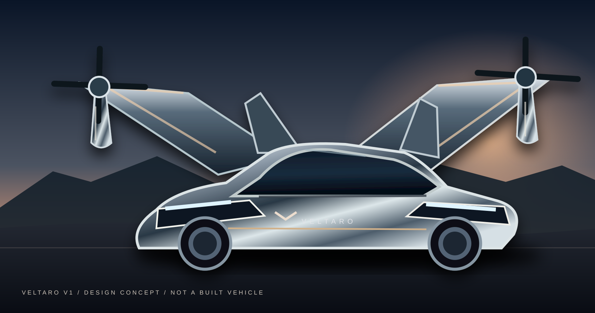
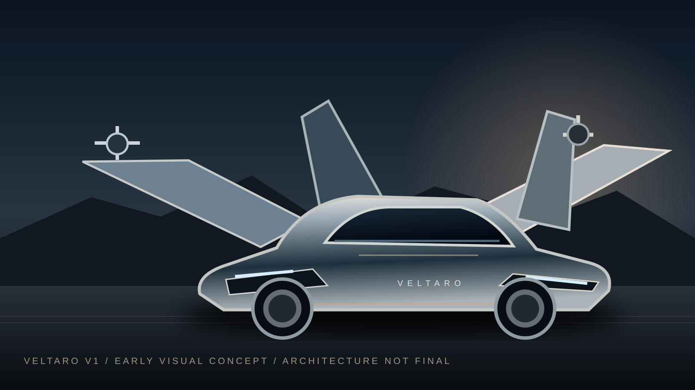

Applied research briefs
Exploring concise, source-backed preliminary studies for early mobility decisions. Proposed first commercial direction; demand and delivery readiness are still being tested.
Explore the proposed serviceVELTARO explores advanced mobility through focused research, thoughtful design and transparent engineering questions. LABS is our first proposed research offering. V1 is our long-term road-and-air vision.
Concept-stage venture. No working vehicle, certification, sales, or reservations are offered. Illustrations represent concepts, not built products.

VELTARO / FUTURE MOBILITYThree connected areas, with clear boundaries between a proposed service, working research tools and a future vehicle concept.
Exploring concise, source-backed preliminary studies for early mobility decisions. Proposed first commercial direction; demand and delivery readiness are still being tested.
Explore the proposed serviceLocal research workspaces, documented assumptions and exploratory comparison tools. Software demonstration is not a validated engineering result.
See research toolsA long-term exploration of combined ground and airborne mobility. Architecture, safety, feasibility and certification questions remain unresolved.
Explore V1 researchThe proposed LABS Mobility Evidence Brief organizes public research, compares early alternatives and makes unknowns explicit. We are speaking with potential users to learn whether this limited deliverable is valuable.
Understand LABS
VELTARO V1 explores how road and air mobility might intersect. Both vertical-lift and folding-wing ideas remain early research questions, not proven designs.
Our approach is to study feasibility, safety and legal requirements first, then decide whether more expensive engineering work is justified.
Read the V1 research programmeThe road, the sky and the details in between. The four reference photographs from the earlier VELTARO website.


These are restored third-party reference photographs, not VELTARO products, facilities, partners or prototypes. Display and commercial-use rights must be reviewed by the site owner before publication.
Original concept illustrations only. No functioning road-and-air vehicle, tested performance or certification is implied.
Public code and research documentation show what has been explored. They do not replace qualified external review, customer validation or regulatory approval.
Browse our researchListen to prospective users and clarify the decision before proposing a solution.
Build traceable comparisons and state unknowns without overstating what models can prove.
Independent checks and customer demand should determine the next commercial or engineering step.
We welcome thoughtful questions about early mobility research, potential pilot needs and relevant technical perspectives. No commercial engagement or response is guaranteed.